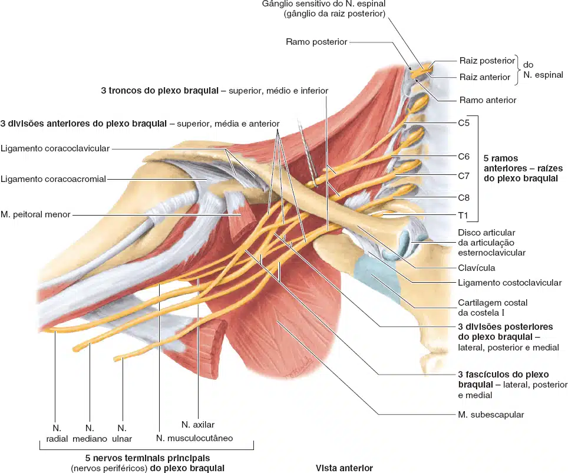
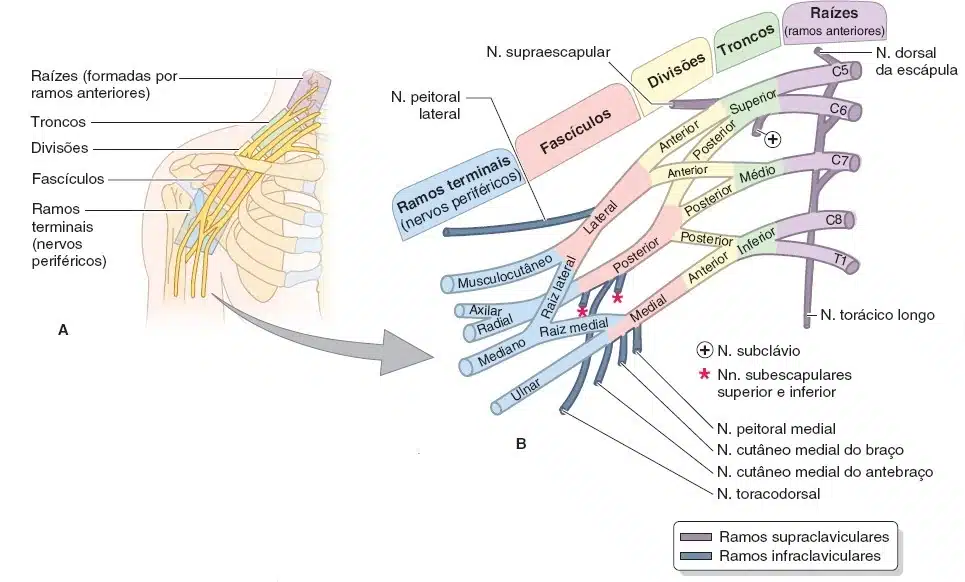
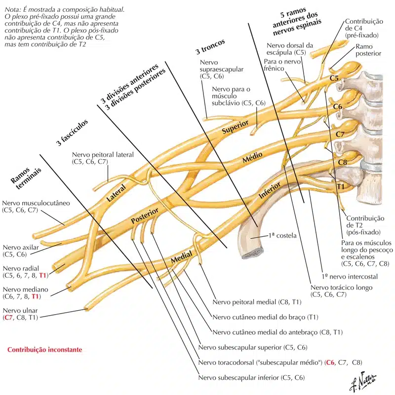

O plexo braquial supre os músculos do membro superior e a parte cutânea do membro e parcialmente do tronco.
Devido aos movimentos precisos do membro e cíngulo superior, o plexo braquial apresenta uma formação complexa e muitos nervos.
No plexo braquial os ramos anteriores se unem para formar troncos, esses se dividem em porções anteriores e posteriores, que se unem para formar os fascículos do plexo braquial.
Os nervos do plexo braquial podem ter origem nos ramos anteriores, troncos ou fascículos.
Os nervos que se originam dos fascículos são denominados de ramos terminais do plexo braquial.
Os ramos anteriores de C5, C6, C7, C8 e T1 formam o plexo braquial.
Algumas vezes o plexo braquial pode ter contribuição de C4 (plexo pré-fixado), outras vezes a contribuição de T2 (plexo pós-fixado).

O plexo braquial forma três troncos: superior, médio e inferior.
Tronco superior: formado pela união dos ramos anteriores de C5 e C6.
Tronco médio: formado pelo ramo anterior de C7.
Tronco inferior: formado pela união dos ramos anteriores de C8 e T1.

Alguns nervos se originam diretamente dos ramos anteriores, como os nervos dorsal da escápula e torácico longo.
Nervo dorsal da escápula: formado pelo ramo anterior de C5, dirige-se posteriormente para suprir os músculos: levantador da escápula, rombóides menor e maior.
Nervo torácico longo: formado pelos ramos anteriores de C5, C6 e C7, seu trajeto é descendente, para suprir o músculo serrátil anterior.
O tronco superior do plexo braquial origina o nervo supra-escapular.
Nervo supra escapular: origina-se do tronco superior, dirige-se para a região posterior da escápula, inervando os músculos: supra-espinal e infra-espinal.

Cada tronco do plexo braquial (superior, médio e inferior), se dividem em duas partes, uma anterior (divisão anterior), e outra posterior (divisão posterior).
Essas divisões formam os fascículos do plexo braquial, sendo eles: medial, lateral e posterior.
Fascículo medial: formado pela divisão anterior do tronco inferior do plexo braquial.
Fascículo lateral: formado pelas divisões anteriores dos troncos superior e médio do plexo braquial.
Fascículo posterior: formado pelas divisões posteriores dos troncos superior, médio e inferior.
Os fascículos do plexo braquial originam os nervos:
Nervo peitoral medial: origina-se do fascículo medial e supre os músculos peitorais maior e menor.
Nervo peitoral lateral: origina-se do fascículo lateral e supre o músculo peitoral maior.
Nervo toracodorsal: origina-se do fascículo posterior e supre o músculo latíssimo do dorso.
Nervo subescapular: origina-se do fascículo posterior e supre os músculos subescapular e redondo maior.
Raízes medial e lateral do nervo mediano: o fascículo medial origina a raiz medial do nervo mediano.
O fascículo lateral origina a raiz lateral do nervo mediano.
As raízes se unem para formar o nervo mediano (nervo terminal do plexo braquial).
Nervo musculocutâneo: origina-se do fascículo lateral, dirige-se para o braço, perfurando o músculo coracobraquial.
Supre os músculos: coracobraquial, braquial e bíceps braquial.
Na região do cotovelo, o nervo musculocutâneo apresenta uma posição mais superficial, para suprir a pele da região lateral do antebraço.
Nervo cutâneo medial do braço: origina-se do fascículo medial e supre a pele da face medial do braço.
Nervo cutâneo medial do antebraço: origina-se do fascículo medial e supre a pele da face medial do antebraço.
Nervo ulnar: origina-se do fascículo medial.
Atravessa o braço sem enviar ramos, passa posteriormente ao epicôndilo medial, alcançado o antebraço.
No antebraço supre os músculos: flexor ulnar do carpo e a parte medial do flexor profundo dos dedos (para os 4º e 5º dedos).
Atravessa o punho, com trajeto entre o osso pisiforme e hamato (túnel ulnar, ou canal de “Guyon”).
Na mão supre os músculos: adutor do polegar, lumbricais (3º e 4º), interósseos palmares, interósseos dorsais, flexor curto do dedo mínimo, abdutor do dedo mínimo e oponente do dedo mínimo.
A inervação cutânea conferida pelo nervo ulnar é na pele que recobre o quinto dedo e a metade medial do quarto dedo.
Nervo mediano: formado pelas raízes medial e lateral (fascículos medial e lateral).
Atravessa o braço sem enviar ramos.
No cotovelo, o nervo mediano perfura o músculo pronador redondo, e distribui-se para os músculos do antebraço: pronador redondo, flexor radial do carpo, palmar longo, flexor superficial dos dedos, flexor profundo dos dedos (para os 2º e 3º dedos), flexor longo do polegar.
Para alcançar a mão, atravessa o punho pelo túnel do carpo.
Na mão supre os músculos: abdutor curto do polegar, oponente do polegar, flexor curto do polegar, 1º e 2º lumbricais.
A inervação cutânea do nervo mediano é a palma da mão, face anterior do 1º, 2º, 3º dedos, e a metade lateral do 4º dedo.
Também supre a pele do dorso das falanges distais do 2º, 3º e metade lateral do 4º dedos.
Nervo axilar: origina-se do fascículo posterior.
Contorna o colo do úmero e supre os músculos deltóide e redondo menor.
Envia fibras para suprir a pele da face lateral e superior do ombro.
Nervo radial: origina-se do fascículo posterior.
O nervo radial supre os músculos tríceps braquial e ancôneo no braço.
Supre a pele da faces ínfero-lateral e posterior do braço.
No cotovelo está localizado anteriormente ao epicôndilo lateral, dividindo-se em dois ramos: superficial e o profundo.
O ramo superficial do nervo radial supre a pele da região da tabaqueira anatômica.
O ramo profundo do nervo radial supre os músculos: braquiorradial, supinador, extensores radiais longo e curto do carpo, extensores dos dedos, extensor ulnar do carpo, extensor longo do polegar, extensor curto do polegar e abdutor longo do polegar.